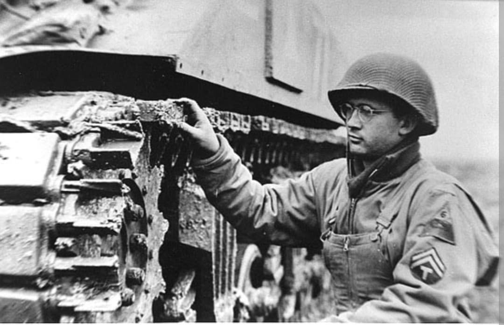
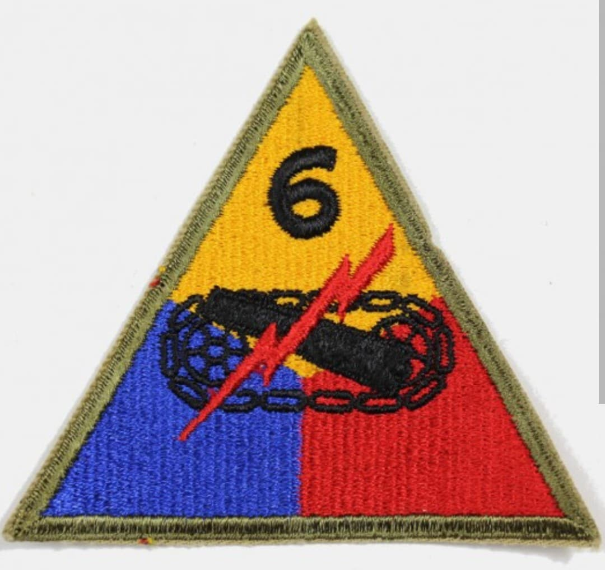
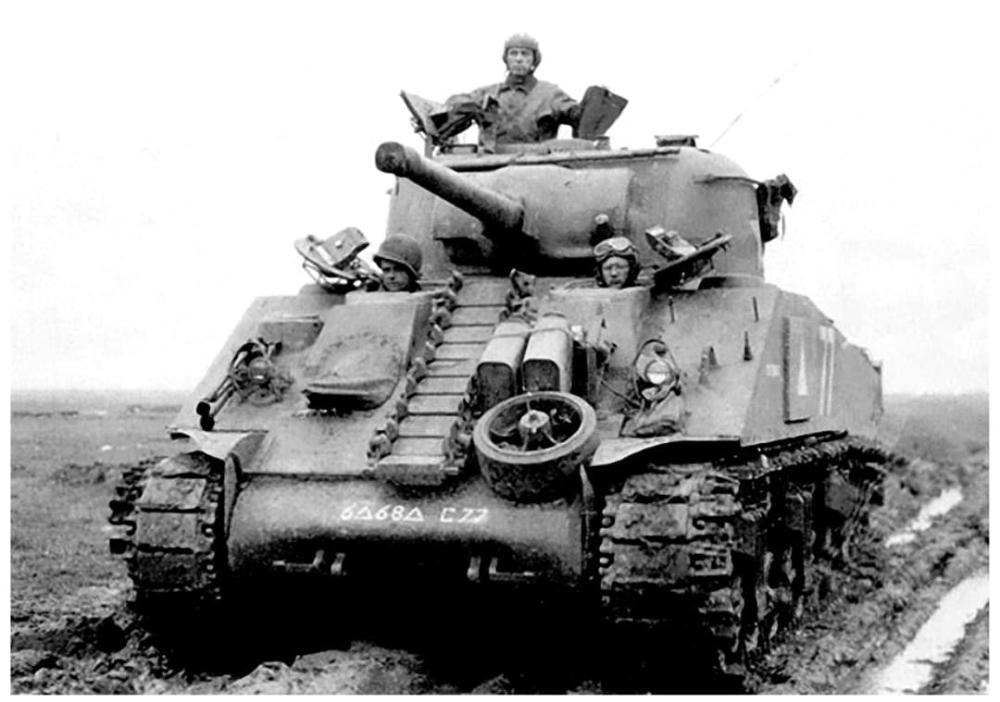

La redoutable force blindée de la 3e armée : des hedgerows normands aux rives de l'Elbe

La 6th Armored Division, fièrement surnommée les « Super Sixth », est l'une des grandes unités blindées de l'US Army durant la Seconde Guerre mondiale. Intégrée au dispositif de la 3e armée du général George S. Patton, elle s'est distinguée par sa remarquable endurance au combat et ses avancées stratégiques fulgurantes en Europe de l'Ouest.
Débarquée en France peu après le D-Day, la division a traversé l'Europe en jouant un rôle de premier plan dans la réduction de la poche de Bretagne, la bataille des Ardennes et l'invasion finale de l'Allemagne.
Activée en février 1942 au Camp Knox (Kentucky) sous les ordres du major général **Robert W. Grow**, la division est structurée pour mener une guerre de mouvement rapide et autonome.
Son insigne d'épaule triangulaire de couleur jaune, bleue et rouge symbolise les trois branches des forces blindées combinées : l'infanterie mécanisée, l'artillerie de campagne et les unités de chars.

Débarquée sur les plages normandes en juillet 1944, la 6th Armored est rapidement lancée à travers l'ouest de la France. Elle joue un rôle déterminant pour isoler et nettoyer la presqu'île de Bretagne, s'emparant rapidement du port stratégique de Brest après des combats acharnés.
Par la suite, elle fonce vers l'est à travers la Loire et la Moselle, bousculant les lignes allemandes en combinant puissance de feu et vitesse de déplacement.

Durant la bataille des Ardennes en décembre 1944, la « Super Sixth » est engagée pour contrer l'offensive de la Wehrmacht, surmontant des conditions hivernales extrêmes avant de reprendre l'offensive vers le front allemand.
Au printemps 1945, elle franchit le Rhin, pénètre profondément en territoire ennemi et atteint la rivière Elbe avant la capitulation définitive en mai 1945.
En près de 281 jours de combats cumulés sur le front, les « Super Sixth » ont parcouru des milliers de kilomètres. La division est entrée dans l'histoire comme l'un des piliers les plus fiables et percutants de la machine blindée américaine en Europe.
Page du Musée HOP WW2 – Section Unités & Divisions